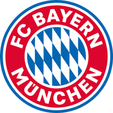

독일 남부 바이에른 주 오버바이에른현의 도시. 바이에른주의 최대 도시이자 주도(州都). 베를린과 함부르크에 이어 독일 제3의 도시이다. 시 경계 내에 약 142만명의 인구가 살고 있다. 그럼에도 불구하고 뮌헨에는 고층건물이 적어서 도시적인 느낌보다는 고풍스러운 유럽의 마을과 같은 느낌이 강한데, 때문에 유럽과 미국에서는 "장난감 마을"이라는 별명을, 현지인들은 "100만 마을" (Millionendorf) 라는 별명을 붙였다.[2] 독일 바이에른 주 오버바이에른 현에 있는 동명의 군이 뮌헨 시를 동쪽과 남쪽에서 반쯤 둘러싼 형태를 하고 있다. 면적은 667.27km2이며 인구는 약 33만명. 군청 소재지는 뮌헨이다. 행정상 25개 구로 되어 있다. 인구가 7배 많은 서울과 구의 숫자가 똑같은데 이것도 1992년 합병을 통해 41개 구에서 줄인 것이다. 참고로 독일의 다른 대도시인 베를린은 12개(2001년 이전에는 23개), 함부르크는 7개 구가 있다. 유럽인들이나 미국인들은 독일이라고 하면 레더호젠(Lederhosen)[3]을 입은 남자들과 디른들(Dirndl)을 입은 여자들이 맥주를 마시며 프레첼을 먹는 모습을 주로 떠올리는데, 사실 이 이미지는 바이에른 주, 특히 뮌헨의 이미지에서 따온 것이다. 이 때문에 다른 지역 독일인들은 "그건 독일이 아니다!"라며 다른 나라 사람들의 이미지를 불식시키려 하지만, 이미 너무 강하게 자리 잡은지라... 바이에른 사람들은 자신들을 독일인이라기보다는 "바이에른 사람"으로 인식하고, 다른 독일인들 역시 바이에른 사람들을 독일인과는 다른 정체성을 가진 사람들로 인식한다
주요 선수들
